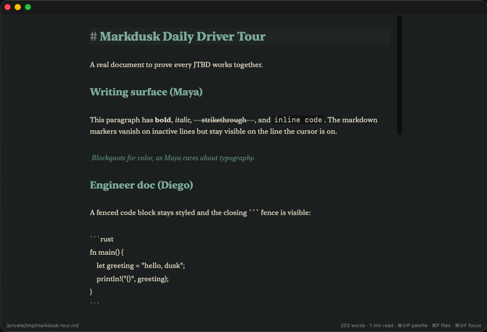

a Mac-native markdown editor
It just opens the file. No account, no cloud, no plugins, no knowledge-management religion — fast and native, the way TextEdit should have been.
Download for macOS Free & open-source · signed & notarized · macOS 12+ · Apple Silicon and Intel
The default .md experience on a Mac is TextEdit showing you
raw asterisks. The good alternatives are paid (Bear, iA Writer, Typora)
or ask you to adopt a whole methodology (Obsidian). Markdusk is the third
option: free, fast, native, and opinionated — it
opens the file and gets out of the way.
Markers hide on inactive lines, stay on the line your cursor is on. Live KaTeX and Mermaid in the buffer.
Rust core, Tauri shell — no Electron. Opens from Finder in under a second; stays smooth past a megabyte.
iA-style sentence and paragraph dim with typewriter scroll, for when the draft needs all of you.
Command palette, fuzzy switcher, multi-cursor, regex find & replace, table tools that keep the pipes aligned.
[[file]] autocompletes and ⌘-click jumps — local linking without moving into Obsidian.
Smoke, Amber, and Verdure — a herbal Art Nouveau palette most editors would never ship.
It's not a knowledge base, not a CMS, not collaborative, not cross-platform, not AI-first. Mac-only, on purpose.